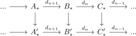
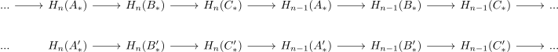
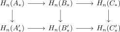
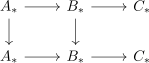

naturality of the boundary map for the long exact sequence
1. Proposition
Let  be an abelian category and
be an abelian category and  be the category of chain complexes
Suppose
be the category of chain complexes
Suppose

is a commutative diagram of exact sequnces of chain complexes
Then there exists a natural diagram

2. Proof
naturality for

follows from applying the homology functor on

naturality at the boundary operator (?)